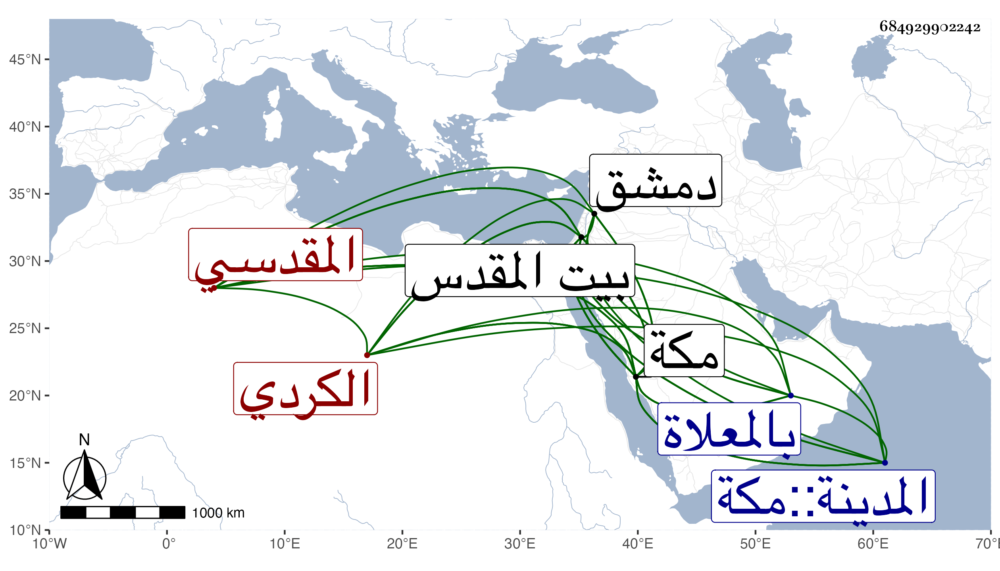

0902Sakhawi.DawLamic.ITO20230111-ara1.EIS1600.684929902242
Biography ID: 684929902242
543
محمد بن حسن بن أحمد بن محمد الشمس أبو عبد الله الكردي ثم المقدسي نزيل مكة ويعرف بابن الكردية . ولد في سنة إحدى وثمانين وسبعمائة ببلاد الأكراد ، وقدم مع أبويه وهو ابن سبع لبيت المقدس فسمع به الصحيح من أبي الخير بن العلائي ومن إبراهيم بن أبي محمود والشمس بن الديري والزين عبد الرحمن بن محمد القلقشندي والشهاب بن الهائم والشمس الهروي وأحمد ويوسف ابني علي بن محمد بن ضوء بن النقيب ، وأقام ببيت المقدس عشرين سنة ومات أبوه هناك فقدم بأمه إلى مكة فقطنها وصار يتردد منها إلى بيت المقدس وإذا جاء منه لمكة أحرم من هناك بالحج ، ثم انقطع بأخرة بمكة وسمع بها في سنة أربع عشرة من الزين المراغي وبدمشق من عائشة ابنة ابن عبد الهادي جزء أبي الجهم وغيره ، وصحب التاج محمد بن يوسف العجمي وأخذ عنه النجم بن فهد وذكره في معجمه وذيله وقال إنه كان حين مجاورته بالحرمين يؤدب أولاد النور علي بن عمر العيني نزيلهما ، وكان مباركا منجمعا عن الناس له معرفة بالطب مبالغا في حب ابن عربي بحيث اقتنى جملة من كتبه . مات في ظهر يوم الثلاثاء عشري شعبان سنة ثلاث وأربعين وصلي عليه بعد العصر ودفن بالمعلاة رحمه الله .
